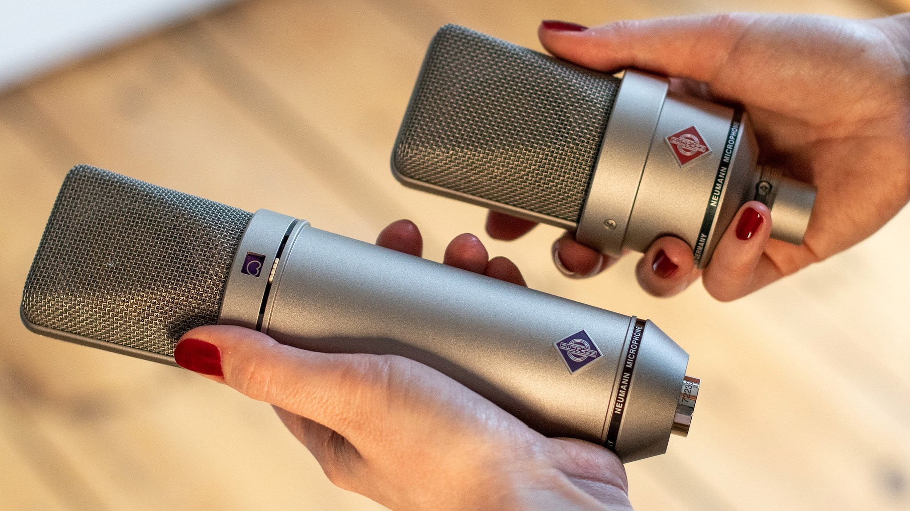

Mrozu - Napad
(wyk. Bartosz Bandurski)
Profesjonalne studio wokalne, prowadzone przez Gracjana Kalandyka
Zapraszamy!
SZKOŁA
BLACK CAT DIVISION to miejsce zbudowane z miłości i pasji do muzyki. Szkoła powstała w 2017 roku. Pasja pozwoliła nam w naturalny i szybki sposób poszerzyć działalność szkoły.
Nasze zajęcia prowadzone są z wielkim zaangażowaniem a materiały dydaktyczne nie są nudne i cały czas angażują naszych uczniów w 100%. Nasi podopieczni realizują wyuczone utwory na profesjonalnym sprzęcie studyjnym!
Sprawdź nasze wideo na FB i Youtube.
BLACK CAT DIVISION to nie tylko szkoła, to także wydawnictwo muzyczne które dostarczy twoją piosenkę do wszystkich mediów streaming’owych i zapewni odpowiedniąpromocje.
Jesteśmy miejscem które prócz zajęć wokalnych i instrumentalnych oferuję rejestracje i realizacje nagrań. Mix, mastering, a nawet pisanie utworu od podstaw czy komponowanie muzyki.
Chciałabyś/chciałbyś nauczyć się pisać i tworzyć utwory? Odwiedź nas i umów się na pierwszą lekcje.
GRACJAN KALANDYK
Gracjan Kalandyk to uczestnik IV edycji programu X-Factor oraz finalista V edycji The Voice of Poland gdzie pod skrzydłami Justyny Steczkowskiej zajął III miejsce. Jest również absolwentem wokalistyki jazzowej i muzyki estradowej na Akademii Muzycznej w Gdańsku oraz czynnym wokalistą z doświadczeniem scenicznym, gitarzystą, kompozytorem i autorem tekstów.
Ma za sobą koncerty, na których wystąpił wspólnie m. in. z: Margaret, Juan Carlos Cano, Justyną Steczkowską, zespołem Dżem, Markiem Piekarczykiem i TSA. Ma na swoim koncie debiutanckim album, wydany nakładem największej wytwórni w Polsce - Universal Music Polska. Produkcją albumu zajął się Robert Amirian, znany ze współpracy z takimi artystami jak: Fismoll, Ewa Farna, Ania Szarmach, Kari, Kasia Kowalska, Anita Lipnicka, Kayah, Mietek Szcześniak czy Kuba Badach. Najnowsze single artysty zapowiadające kolejny album, produkowane były ze znanym duetem – Martin Lange.
WOKAL
⮞ Chcesz zacząć śpiewać ale nie wiesz jak się do tego zabrać?
⮞ Chcesz przygotować się do festiwalu/ konkursu?
⮞ A może chcesz wziąć udział w programie typu „Talent Show”?
⮞ Zawsze marzyłaś/łeś o napisaniu, skomponowaniu i nagraniu własnej piosenki?
W BLACK CAT DIVISION oferujemy indywidualne zajęcia wokalne prowadzone przez Gracjana Kalandyka. Duże doświadczenie na scenie i w studiu, wykształcenie muzyczne i lata prowadzonych zajęć wokalnych to pewność, że trafiłaś/łeś pod właściwy adres.
Jeśli nie wiesz na jakim jesteś poziomie zaawansowania, nie przejmuj się!
Umów się na pierwszą lekcję, pokaż co potrafisz, a trener wokalny dopasuje materiały dydaktyczne do twojego poziomu.
Nasze zajęcia wokalne oparte są na pracy z profesjonalnym sprzętem studyjnym z najwyższej półki.
SPRAWDŹ NAS
Sprawdź nas na YouTube i zobacz co potrafią nasi podopieczni!

Varius Manx - Ruchome piaski
wyk. Alicja Semkiw
Viki Gabor - Moonlight
(wyk. Agatka Gastoł)
GITARA
⮞ Zawsze marzyłaś/łeś o grze na gitarze podziwiając swoich ulubionych artystów na YouTube?
⮞ Zawsze chciałaś/łeś zagrać na wielkiej scenie przed dużą publiką?
⮞ Marzyłaś/łeś o zagraniu znanych utworów przy ognisku?
W BLACK CAT DIVISION pomożemy Ci spełnić marzenia! W naszej szkole nie ma nudnych materiałów dydaktycznych. Nowoczesne podejście do nauki naszych pedagogów/nauczycieli, dużo energii i materiały szkoleniowe uważnie dobierane do umiejętności i upodobań muzycznych naszych podopiecznych to przepis na sukces!
BAS
⮞ Zawsze chciałeś grać na basie jak Sting?
⮞ A może szaleństwo basisty zespołu Red Hot Chili Peppers przykuło twoją uwagę?
⮞ Grube struny to twój żywioł?
W BLACK CAT DIVISION nauczymy grać na basie każdego! I to bez względu na stopień zaawansowania. Nieważne czy już grasz na basie od jakiegoś czasu, czy to twój pierwszy kontakt z instrumentem. Poziom zaawansowania dopasowujemy do ucznia i przypominamy – u nas nie ma nudnych materiałów dydaktycznych.
Wszystkie zagadnienia opracowujemy na znanych utworach topowych zespołów - Iron Maiden, The Police, Nirvana i wiele innych! Wpadnij na zajęcia gitary basowej do BLACK CAT DIVISION i zagraj swoje ulubione piosenki!
PIANINO
⮞ Elton John, Freedie Mercury, Bruno Mars – wszyscy Ci znakomici artyści komponowali/komponują swoje utwory na klawiszach.
Pianino otworzyło drogę do muzyki niejednemu artyście, wpadnij na zajęcia pianina i daj się porwać muzycznej przygodzie. Dołącz do naszego zespołu i nagraj z nami cover w studyjnej jakości! (wideo band)
UKULELE
⮞ Kto by nie chciał grać na ukulele i śpiewać jak Billie Eilish?
W BLACK CAT DIVISION wszystko staje się możliwe! Ukulele to łatwy instrument, który poznasz dzięki naszej szkole w ciekawy i interesujący sposób! Chcesz grać swoje ulubione piosenki? W BLACK CAT DIVISION nauczymy Cię grać na ukulele.
Sprawdź video naszych uczniów i zapisz się na pierwszą lekcje!
STUDIO
BLACK CAT DIVISION to studio z najwyższej jakości sprzętem studyjnym, gdzie zrealizujesz swój ulubiony cover w studyjnej jakości! Mamy dostęp do wielu znakomitych mikrofonów, a sprzęt takich firm jak Antelope, Universal Audio czy Neumann to podstawa naszej pracy.
⮞ Chcesz nagrać swój autorski utwór?
⮞ Interesuje Cię nagranie podcastu?
⮞ Chcesz nagrać cover?
⮞ Skontaktuj się z nami i zaplanuj swoją sesję!
To jest mikrofon, bardzo fajny, dobrze gra.
To jest mikrofon, bardzo fajny, dobrze gra.

To jest mikrofon, bardzo fajny, dobrze gra.
WYDAWNICTWO
BLACK CAT DIVISION to również wydawnictwo! Jesteśmy podpisani z największym polskim dystrybutorem. Jeżeli chciałbyś, aby twój utwór znalazł się na takich platformach jak Tidal, Spotify czy Apple Music, napisz do nas!
Prócz dostarczenia utworu na wszystkie platformy streaming’owe, jesteśmy w stanie zająć się jego promocją.
Poniżej znajdują się linki do naszych produkcji.